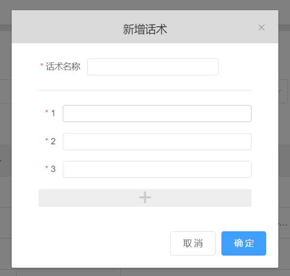
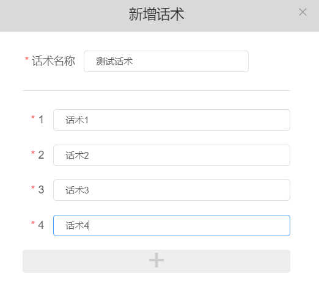
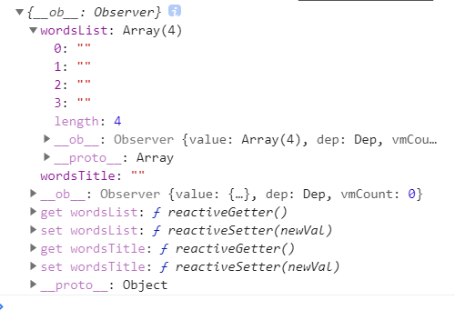
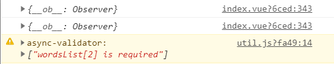
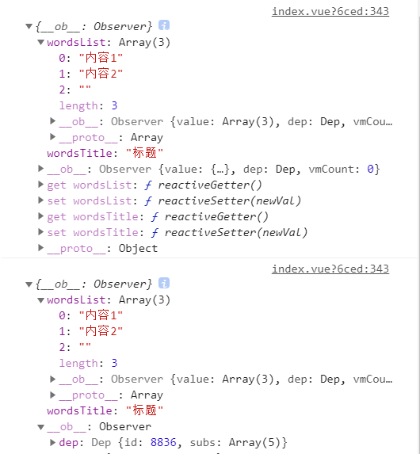
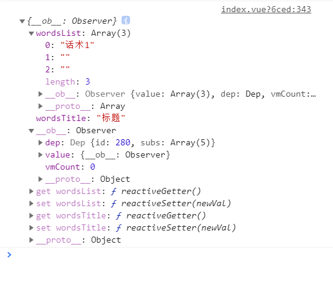
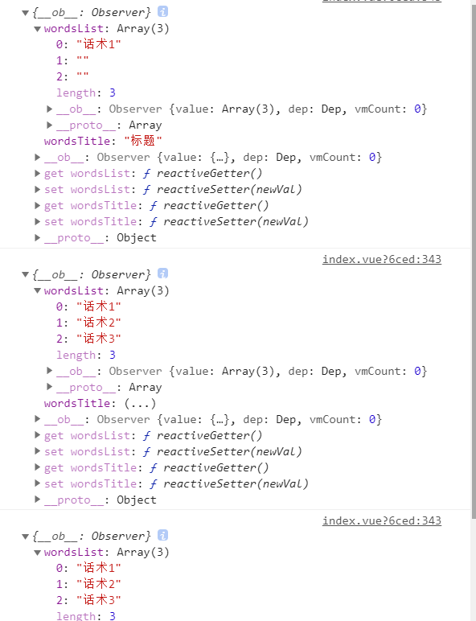
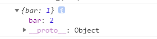
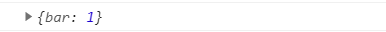
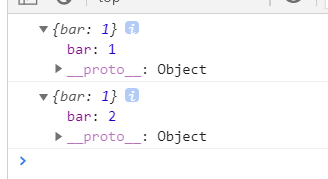

console.log是“异步打印”吗——寻求console.log的打印机制
最近在跟进项目的过程中遇到一个很奇妙的问题，让我一度以为自己的电脑出现了故障（当然，从业未深的本白经常觉得电脑出故障哈哈哈）。但是经过死磕两小时，查阅了许多文章以后，我终于发现了问题所在，那就是js这个Console.log的打印机制问题，话不多说，一起来重现一下。
“bug”重现
当然这只是我以为的”bug”
首先，我的项目需求是：如此如此~这般这般~
然后最后项目呈现的部分界面是这样的

我会在对应的input输入框中输入对应的内容，然后当我点击确定按钮时，会向服务器发送ajax请求新增一条话术到数据库。
一个非常普通的弹窗，但是我在发起请求前想看一下我发送的数据，所以我在发送前对动态绑定的数据进行了打印，此时，问题出现了。我们先来看看代码
js代码
async addWords() {
console.log(this.addWordsForm); // 打印数据
... //省略
await API.getWordsAdd({ // 此处为封装的axios请求方法
...
}).then(res => {
...
});
this.addWordsDialog = false; // 关闭新增话术弹窗
this.$refs.addWordsForm.resetFields(); // 重置表单
...
},
我在输入框中输入了如下内容

并且我预想的数据结构应该是下面这样，然后我就能正常发起请求添加话术
{ob: Observer}
wordsList: Array(3)
- 0: “话术1”
- 1: “话术2”
- 2: “话术3”
- 3：”话术4“
- length: 4
wordsTitle: “测试话术”
但是当我拿到打印结果的时候，我感到非常的不可思议，因为：我的数据竟然“消失”了！！！，看图

这是为什么呢？我的数据从哪里开始丢失了？
排查“bug”
我觉得很奇怪，我想知道是哪一步出了问题，于是，首先我给input输入框添加了一个change事件，每次内容改变就打印一次话术表单的内容
html:
...
<el-input
v-model="addWordsFormCopy.wordsList[index]"
autocomplete="off"
@change="formChange()" // 添加一个事件
></el-input>
...
Vuejs:
methods: {
formChange(){
console.log(this.addWordsForm); // 打印新增表单内容
},
}
当我输入了两条话术，毫无疑问他打印了两次内容，因为没输入完一次，他就会打印一次

此时我想展开看看我输入的内容是否存在，以此来判断我的表单内容“消失”的问题是不是出在这个地方

谢天谢地，他依然存在，也就证明表单内容在这个地方他没有“消失”
当然确实如此，起初我也觉得这里没有什么问题，但是我越看越觉得奇怪
突然，我发现了一个重大的问题，他们在不同时间打印，第一次打印的时候第二条话术还没有输入，为什么他已经打印出来了？？？
这是什么机制？玄学？js的Bug？他预判了我的预判？
第一次猜想
我非常的兴奋，我的第一反应就是，难道js的console.log有个延时的机制？所以我再次测试：
我先输入一条话术，然后等了一段时间，再输入第二条话术，然后查看两条打印内容，
毫无疑问，两次打印内容还是长一样，也就是说，这个我以为的延时机制，他压根不存在。
OK，这个猜想pass。
第二次猜想
这次我认真思考了一下所学知识，是不是说他这个console.log都是打印最后一次的结果（当时也没想的很清楚，认为原理就有点类似于数据引用吧，当原数据发生改变，打印内容也发生改变），所以我如果输入一百次，第一次打印的结果也会变成第一百次的结果呢？
话不多说，直接开测，我先输入一条话术，然后看看打印内容

毫无疑问，表单内容都还存在，并且只有一条，如上图
然后我把打印结果闭合，再输入第二条和第三条话术，再把他们都展开，我预想的是他们三次打印的内容一样，这样也就能验证我的第二次猜想，但是…..

结果显而易见，我的猜想似乎又出现了问题，后面两次打印的内容是预想中的最终表单结果，但是第一次打印的内容还是一条。
测试到这我已经没有任何头绪，在MDN对于console的解释中也没有寻求到答案，只能选择求助百度和Google，查阅了一下console.log的打印机制的一些博文，最后在翻阅评论中找到了答案。
寻求console.log打印原理
在一本叫《你不知道的javascript中卷》的书中讲解有关控制台的部分中写道：
并没有什么规范或一组需求指定console.* 方法族如何工作——它们并不是JavaScript 正式
的一部分，而是由宿主环境（请参考本书的“类型和语法”部分）添加到JavaScript 中的。因此，不同的浏览器和JavaScript 环境可以按照自己的意愿来实现，有时候这会引起混淆。尤其要提出的是，在某些条件下，某些浏览器的console.log(..) 并不会把传入的内容立即输出。出现这种情况的主要原因是，在许多程序（不只是JavaScript）中，I/O 是非常低速的阻塞部分。所以，（从页面/UI 的角度来说）浏览器在后台异步处理控制台I/O 能够提高性能，这时用户甚至可能根本意识不到其发生。
感觉好像不是很好懂？
举个简单的栗子，有以下js代码
let foo = {
bar: 1;
}
console.log(foo);
foo.bar++;
此时按照惯性思维，我们觉得打印操作在自增操作之前，也就意味着打印结果应该为{bar: 1}，但实际上是这样的

觉得非常的奇怪，为什么他打印时显示{bar: 1}，但当我们把打印内容展开后，展示的却是{bar: 2}？
其实这就是涉及到上面引用的文字了，在某些条件下，某些浏览器（记住，某些浏览器）并不会把打印内容立即输出，而是浏览器在后台异步的处理控制台I/O，从而提高性能，说的通俗易懂一点，console.log可以理解为在某些条件下他是“异步打印”的（为什么打引号？因为实际上不是什么所谓的异步打印，只是打印的过程给人感觉起来像异步），当浏览器读取到console.log(foo)时，控制台会立即打印引用的快照
什么是快照，你可以理解为调用了一次JSON.stringify()，将对象序列成一个字符串中展示
就像下图一样

打印引用的快照以后他会继续逐行执行console.log(foo)后面的代码，而之后遇到了foo.bar++，于是对象foo对象里的bar值就自增变成了2。而当我们展开打印内容时，他才会去寻找这个引用的地址取得内容，并展示给用户。所以会给人一种异步打印的错觉，但其实，console.log()仍然是一个同步操作。
所以理论上来说，只要你在浏览器读取到自增之前点开控制台打印内容，他应该还是{bar: 1}，至于理论能否落地？咱们来测试一下
假设咱的Chrome浏览器不太行了，要五秒以后才能读取到下一句代码：
let foo = {
bar: 1
}
console.log(foo); // 第一次打印
setTimeout(() => {
console.log(foo); // 第二次打印
foo.bar++;
}, 5000);
那么在五秒内我们立即点开第一条打印内容会是什么样呢？

果然，当我们在五秒内点开打印的内容时，由于还没有执行自增操作，所以他仍然是{bar: 1}，而五秒后的第二次打印，他的内容就跟我们预想的一样了。
其实这种看起来像异步的打印方式，不仅是对条件有限制（比如打印的是个引用数据类型），对浏览器也有限制（老版的IE就会直接把整个引用地址的内容打印出来）。但是从某些方面看来，这也算是对浏览器的一种优化
为什么说是种优化呢，试想一下，如果你要打印引用地址内的参数非常多，并且打印次数也很多时，无数次的打印，对浏览器的消耗也会变得非常巨大。
复盘一下
再重新整理一下我最开始遇到的bug，咱们把代码拿过来
async addWords() {
console.log(this.addWordsForm); // 打印数据
... //省略
await API.getWordsAdd({ // 此处为封装的axios请求方法
...
}).then(res => {
...
});
this.addWordsDialog = false; // 关闭新增话术弹窗
this.$refs.addWordsForm.resetFields(); // 重置表单
...
},
为什么打印出来我的内容都“消失”了呢，原来是因为再上面这段代码的最后，我对表单内容进行了重置，也就意味着，当我点开控制台打印的数据时，访问到的引用地址内已经是一个空表单了，那么自然展示给我的打印内容也就都是空的啦~
我们试着直接打印一下这个表单里的话术列表
console.log(this.addWordsForm.wordsList)
结果就跟前面我们分析的一模一样，引用的快照内是有数据，但是展开后的最终引用地址内的数据已经被重置了，所以都是空字符串。
所以其实对实际开发没有影响，当我在重置表单之前将数据提交，数据其实依然存在，并没有”消失”。
综上所述：
- 当你在用调试的过程中使用到了控制台打印，并且发现打印的引用快照与展开后的数据不符时，需要意识到，这是浏览器I/O的异步化造成的
- 而遇到这种情况，又想要调试时，最好还是选择在JavaScript的调试器中打断点，不能完全依赖控制台，因为控制台也会变魔术欺骗你的眼睛
- 那打断点嫌麻烦怎么办？那咱们就强制打印快照，看快照内容。什么？你问我怎么打？前面提过了，JSON.stringify(foo);